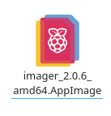
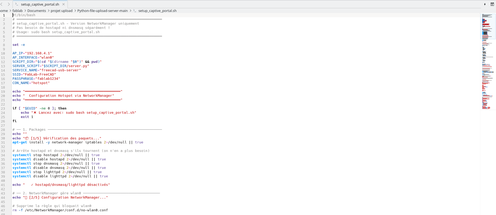
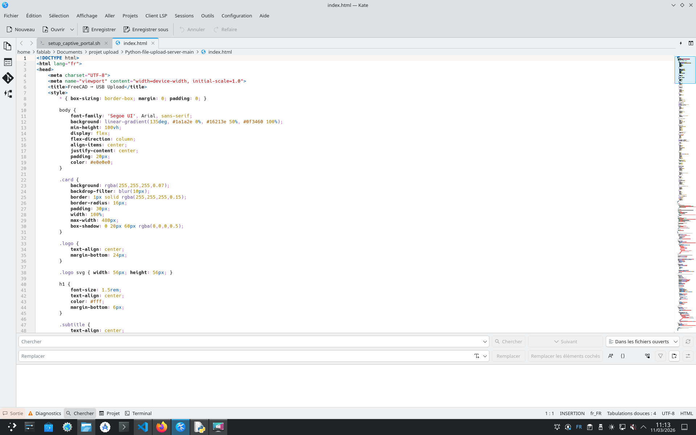
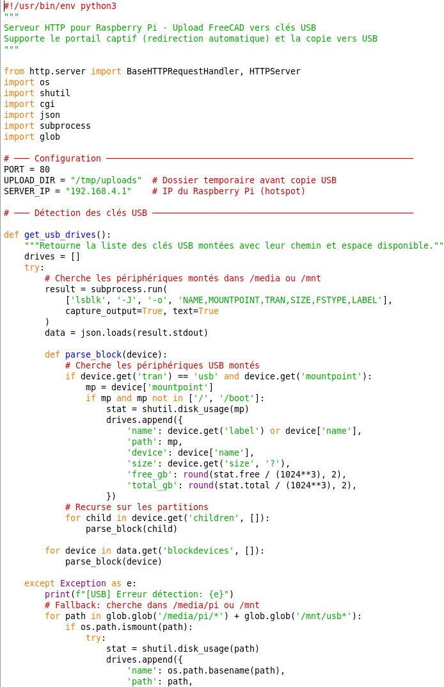
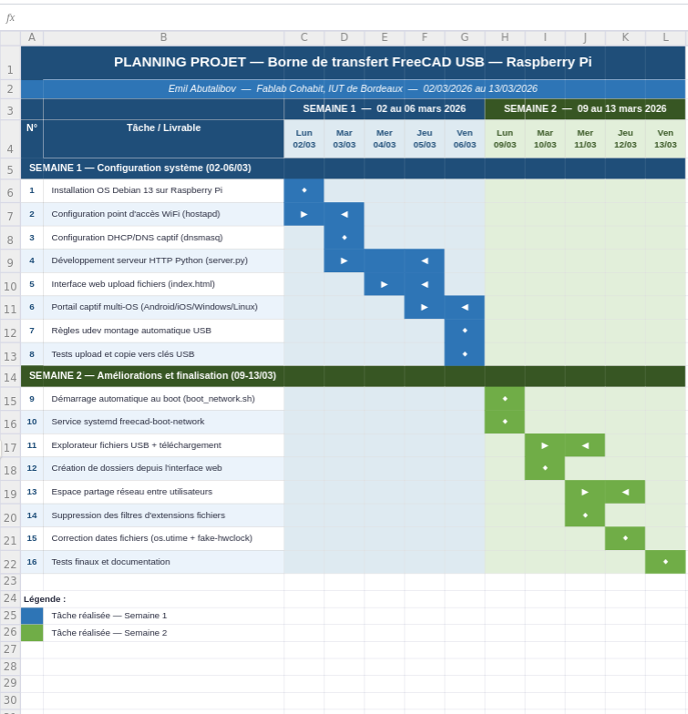
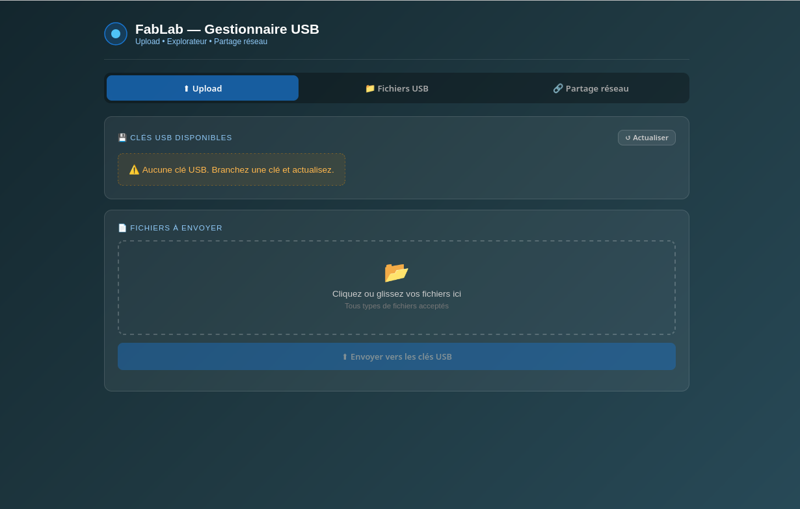
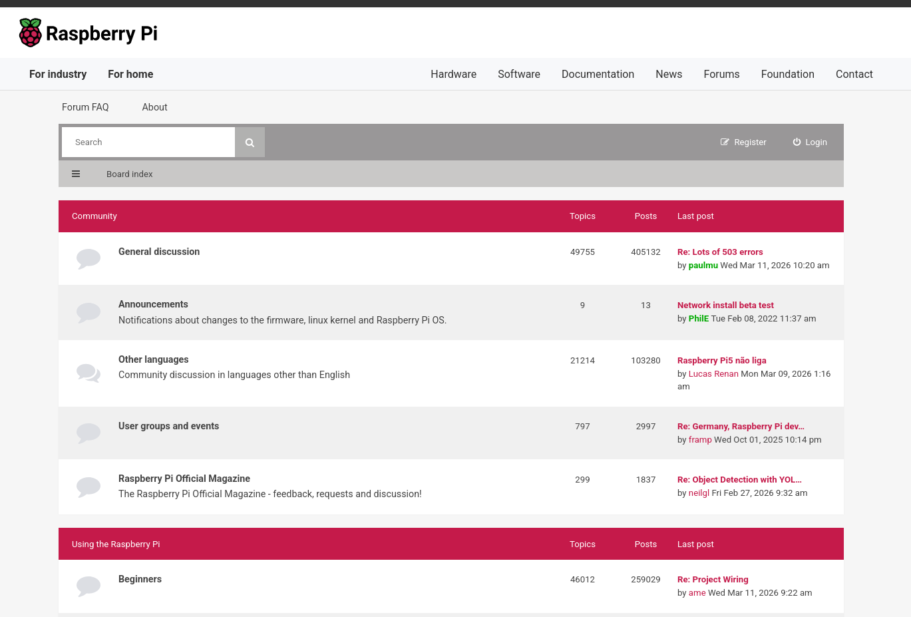

Projets & Stages
Ateliers Professionnels, réalisations et expériences de stage
Ateliers Professionnels
Objectif : Gérer l'assistance technique et assurer la continuité de service à travers un cycle complet de traitement d'incidents.
Travail réalisé :
- Analyse approfondie des tickets d'incident pour comprendre la problématique technique de l'utilisateur.
- Recherche et diagnostic pour identifier la résolution la plus adaptée.
- Rédaction de réponses professionnelles intégrant la solution technique pour clore le ticket.
- Enregistrement et archivage des interventions dans une base de données Microsoft Access.
Analyse des besoins utilisateurs et résolution technique.


Objectif : Développer un utilitaire desktop permettant de transformer des données textuelles en scripts SQL exploitables.
- Création d'un projet Windows Forms complet avec Visual Studio en C#.
- Conception d'une interface utilisateur fonctionnelle avec boutons interactifs.
- Ajout d'une fonctionnalité pour sélectionner dynamiquement un fichier texte source.
- Développement de la logique de génération d'un fichier SQL prêt pour l'insertion en BDD.
- Implémentation de messages d'erreur personnalisés et confirmation de succès.
- Réalisation collaborative d'un dossier "Analyse.pdf" sur la gestion de projet en groupe.


.png)
.png)
.png)
Objectif : Concevoir une application de gestion pour l'organisation et l'inscription des ligues sportives à un événement.
Travail en groupe :
- Participation active à la planification et à l'organisation globale du projet.
- Validation régulière des étapes de planification auprès du professeur référent.
- Réalisation et rendu des livrables : code source, BDD, maquettes, suivi WeKan.
Travail en autonomie :
- Conception de l'interface graphique dédiée à la gestion administrative des ligues.
- Implémentation complète du module CRUD pour les ligues.
- Développement du module d'inscription JPO (taille de stand, équipements nécessaires).
- Finalisation des fonctionnalités liées aux membres et à leurs participations.
- Préparation de scripts SQL pour l'insertion de données de test.


Objectif : Développer une plateforme web collaborative pour le suivi des rencontres sportives.
Travail en groupe :
- Étude et découverte des différents documents techniques liés au projet.
- Répartition équitable du travail de développement entre les membres de l'équipe.
- Mise en place et gestion du projet sur GitLab — assemblage et tests d'intégration.
- Modification, optimisation et validation finale du code HTML/CSS du site.
Travail en autonomie (Services et Ligues) :
- Conception du design et de la structure CSS globale du projet.
- Création de la structure HTML pour les pages spécifiques.
- Tests approfondis et vérification de la validité des codes HTML et CSS.

Création d'une identité numérique via des technologies Web modernes.


Objectif : Piloter l'organisation technique d'un championnat, incluant la gestion des matchs, des scores et du corps arbitral.
Travail en autonomie :
- Conception des interfaces pour la gestion des Matchs, des Arbitres et de leurs Rôles.
- Implémentation des fonctions CRUD pour ces entités.
- Développement du module d'affectation des équipes à chaque match.
- Programmation des fonctions d'affectation des arbitres et de leurs rôles.
- Mise à jour dynamique des scores et validations strictes des entrées utilisateur.
Travail en groupe :
- Développement de la structure globale en C# — connexion MySQL, tests unitaires.
- Planification via diagrammes de Gantt et validation des maquettes avec le professeur.


Objectif : Faire évoluer le portail web de la M2L en sécurisant les formulaires et la gestion des données des clubs.
Travail en équipe :
- Importation de la BDD m2l dans phpMyAdmin — analyse et complétion du MEA.
- Installation et configuration de l'environnement PHP/MySQL et Git.
- Création des comptes utilisateurs pour l'administration du site m2l.
Travail en autonomie :
- Développement complet du module CRUD pour les clubs affiliés à une ligue.
- Affichage dynamique pour chaque ligue — sécurisation des formulaires (injections SQL).
- Module CRUD complet pour les Ligues et tests unitaires associés.


Objectif : Concevoir et déployer un service backend d'authentification sécurisé pour une plateforme citoyenne.
Travail en groupe :
- Étude approfondie de la documentation technique du projet.
- Conception et création de la base de données associée.
- Assemblage du travail collaboratif sur Git (commits réguliers, branches par membre).
Travail en binôme :
- Développement d'une API dédiée à la gestion de l'authentification des utilisateurs.
- Utilisation de Visual Studio Code comme environnement de développement principal.


Expériences de Stage
Durée : 5 semaines au Fablab Cohabit
J'ai observé le fonctionnement du Fablab, réparé un ordinateur en panne (carte graphique), créé un bot JavaScript via SSH, et découvert plusieurs langages (C++, JavaScript, COBOL).
Projet capteur de qualité de l'air (COV et CO₂) avec un camarade : câblage LCD I2C, programmation Arduino, tests dans différents environnements (imprimantes 3D, salle normale, extérieur).
J'ai également utilisé WordPress pour apprendre les bases de la création de sites web, observé des outils de sécurité informatique (Faraday) et me suis connecté à un serveur via Proxmox.
Observation du matériel du Fablab et réparation d'équipements informatiques.


Tests et validation du capteur de qualité de l'air dans différents environnements.


Découverte et utilisation de WordPress pour la création de sites web.

Collaboration sur le projet capteur avec organisation et veille technologique.

Développement et programmation du capteur pour afficher les résultats en temps réel.

Veille technologique, rédaction de comptes rendus et préparation de l'oral de stage.
Durée : 8 semaines — IUT de Bordeaux (26/01/2026 au 06/03/2026)
Ce stage m'a permis de travailler sur deux axes : contribution au projet web Amphitryon du Fablab, et développement complet d'une borne autonome de transfert de fichiers sur Raspberry Pi.
Face à des blocages techniques sur le projet web (erreurs plugins Deno), j'ai proposé avec mon tuteur un nouveau projet : une borne permettant aux utilisateurs de déposer leurs fichiers FreeCAD depuis n'importe quel appareil connecté au Wi-Fi du Raspberry, puis copiés automatiquement sur des clés USB.
Réalisé de façon itérative (sem. 5 et 6) : configuration Wi-Fi, serveur Python, portail captif multi-OS, explorateur de fichiers web, espace de partage réseau et démarrage automatique via systemd.
Installation et configuration d'un OS Linux (Debian 13) sur Raspberry Pi, mise en place de services systemd persistants via setup_captive_portal.sh.


Diagnostic et résolution d'incidents : port 80 occupé, clés USB non montées, conflit NetworkManager/hostapd, erreur de syntaxe systemd, module Python cgi supprimé en v3.13.


Planification itérative : analyse du besoin, développement, test, correction. Comptes rendus hebdomadaires détaillés.

Déploiement d'un service WiFi + serveur web + stockage USB accessible à tous sans configuration requise.



Veille technologique sur systemd, Python 3.13, portails captifs (HTTP 511), et fake-hwclock. Apprentissage autonome et résolution de problèmes en conditions réelles.
